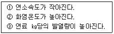

가스산업기사 (2005-05-29 기출문제)
1과목: 연소공학
1. 과잉공기율에 대한 가장 옳은 설명은?
- 연료 1㎏당 실제로 혼합된 공기량과 완전연소에 필요한 공기량의 비로 정의된다.
- 연료 1㎏당 실제로 혼합된 공기량과 불완전 연소에 필요한 공기량의 비로 정의된다.
- 기체 1m3당 실제로 혼합된 공기량과 완전연소에 필요한 공기량의 차로 정의된다.
- 기체 1m3당 실제로 혼합된 공기량과 불완전 연소에 필요한 공기량의 차로 정의된다.
(정답률: 66%)

2. 산소농도가 높을 때의 연소의 변화에 대하여 올바르게 설명한 것으로 짝 지워진 것은?

- ①
- ②
- ①②
- ①②③
(정답률: 95%)
3. 2kg의 기체를 0.15MPa, 15℃에서 체적이 0.1m3가 될 때까지 등온압축할 때 압축 후 압력은 몇 MPa인가? (단, 비열은 각각 Cp=0.8kJ/kg·K, Cv=0.6kJ/kg·K이다.)
- 1.141
- 1.152
- 1.163
- 1.174
(정답률: 67%)
4. 다음 중 자기 연소성 물질이 아닌 것은?
- C6H7O2(ONO2)3
- C3H5(ONO2)3
- C6H2(CH3)(NO2)3
- OCH2CHCH3
(정답률: 82%)
5. 최초 완만한 연소가 격렬한 폭굉으로 발전하기 까지의 거리를 폭굉유도거리라고 한다. 이 폭굉유도거리가 짧아지는 원인이 될 수 없는 것은?
- 압력이 높을수록
- 점화원의 에너지가 강할수록
- 정상 연소속도가 큰 혼합가스인 경우
- 배관속에 방해물이 없거나 배관경이 클수록
(정답률: 87%)
6. 가스 연료 중 LP Gas의 연소 특성에 대한 설명으로 가장 옳은 것은?
- 일반적으로 발열량이 적다.
- 공기 중에서 쉽게 연소 폭발하지 않는다.
- 공기보다 무겁기 때문에 바닥에 고인다.
- 금수성 물질이므로 흡수하여 발화한다.
(정답률: 93%)
7. 다음 중 "착화온도가 80℃ 이다" 를 가장 잘 설명한 것은?
- 80℃이하로 가열하면 인화한다는 뜻이다.
- 80℃로 가열해서 점화원이 있으면 연소한다.
- 80℃이상 가열하고 점화원이 있으면 연소한다.
- 80℃로 가열하면 공기중에서 스스로 연소한다.
(정답률: 83%)
8. 소화의 원리에 대한 설명 중 가장 거리가 먼 것은?
- 가연성가스나 가연성 증기의 공급을 차단시킨다.
- 연소 중에 있는 물질에 물이나 특수 냉각제를 뿌려 온도를 낮춘다.
- 연소 중에 있는 물질에 공기를 많이 공급하여 혼합기체의 농도를 높게 한다.
- 연소 중에 있는 물질의 표면을 불활성가스로 덮어 씌워 가연성 물질과 공기를 차단시킨다.
(정답률: 79%)
9. 프로판(C3H8)과 부탄(C4H10)의 혼합가스가 표준상태에서 밀도가 2.25(kg/m3)이다. 프로판의 조성은 몇 %인가?
- 35.16
- 42.72
- 54.28
- 68.53
(정답률: 62%)
10. 어떤 혼합가스가 산소 10몰, 질소 10몰, 메탄 5몰을 포함하고 있다. 이 혼합가스의 비중은 약 얼마인가?(단, 공기의 평균분자량은 29이다.)
- 0.94
- 0.88
- 1.07
- 1.00
(정답률: 62%)
11. 불활성가스에 의한 가스치환의 가장 주된 목적은?
- 가연성가스 및 지연성가스에 대한 화재폭발 사고 방지
- 지연성가스에 대하여 산소결핍 사고의 방지
- 독성가스에 대한 농도 희석
- 가스에 대한 산소 과잉 방지
(정답률: 72%)
12. CnHm 1Nm3을 완전 연소시켰을 때 생기는 H2O 양(Nm3)은?
- n/2 Nm3
- n Nm3
- 2n Nm3
- 4n Nm3
(정답률: 74%)
13. 단원자 분자의 정용열용량(Cv)에 대한 정압열 용량(Cp)의 비 값은?
- 1.67
- 1.44
- 1.33
- 1.02
(정답률: 65%)
14. 프로판가스(C3H8)을 완전연소 시킬 때 필요한 이론공기량은 얼마인가?
- 10.23Nm3/㎏
- 11.31Nm3/㎏
- 12.12Nm3/㎏
- 13.24Nm3/㎏
(정답률: 62%)
15. 고위발열량과 저위발열량의 차이는 다음 중 연료의 어떤 성분 때문인가?
- 유황과 질소
- 질소와 산소
- 탄소와 수분
- 수소와 수분
(정답률: 74%)
16. 파라핀계탄화수소 계열의 가스에서 탄소의 수가 증가함에 따른 변화를 옳지 않게 짝지은 것은?
- 발열량(kcal/m3) - 증가한다.
- 발화점 - 낮아진다.
- 연소속도 - 늦어진다.
- 폭발하한계 - 높아진다.
(정답률: 63%)
17. 실제가스가 이상기체 상태방정식을 만족하기 위한 조건으로 옳은 것은?
- 압력이 낮고, 온도가 높을 때
- 압력이 높고, 온도가 낮을 때
- 압력과 온도가 낮을 때
- 압력과 온도가 높을 때
(정답률: 83%)
18. 융 점이 낮은 고체연료가 액상으로 용융되어 발생한 가연성 증기가 착화하여 화염을 내고, 이 화염의 온도에 의하여 액체표면에서 증기의 발생을 촉진시켜 연소를 계속해 나가는 연소 형태는?
- 증발연소
- 분무연소
- 표면연소
- 분해연소
(정답률: 73%)
19. 다음 중 불연성 물질이 아닌 것은?
- 주기율표의 0족 원소
- 산화반응 시 흡열반응을 하는 물질
- 이미 산소와 결합한 산화물
- 발열량이 크고 계의 온도 상승이 큰 물질
(정답률: 70%)
20. 가연 물질이 연소하기 위하여 필요로 하는 최저열량을 무엇이라 하는가?
- 점화에너지
- 활성화에너지
- 형성엔탈피
- 연소에너지
(정답률: 79%)
2과목: 가스설비
21. 고압가스설비에서 정기점검 및 이상상태 발생 시 그 재해확산방지를 위한 안전장치인 플레어스텍의 일반적인 구성요소가 될 수 없는 것은?
- 파이롯트 버너
- 시일 드럼
- 녹 아웃 드럼
- 긴급차단장치
(정답률: 52%)
22. 도시가스 공급시설인 정압기의 특성 중 정특성과 관련이 없는 것은?
- 록업(lock up)
- 리프트(lift)
- 옵셋(off set)
- 쉬프트(shift)
(정답률: 54%)
23. "유량은 회전수에 비례하고 지름의 3승에 비례한다"는 무엇에 대한 설명인가?
- 상사법칙
- 비교회전도
- 동력
- 압축비
(정답률: 64%)
24. 도시가스 제조원료가 가지는 특성으로 가장 거리가 먼 것은?
- 파라핀계 탄화수소가 적다.
- C/H 비가 작다.
- 유황분이 적다.
- 비점이 낮다.
(정답률: 48%)
25. 최고충전압력이 180kg/cm2 인 용기에 압축가스를 충전할 때 안전밸브 작동 압력은 몇 kg/cm2 인가?
- 240이하
- 300이하
- 144이하
- 270이하
(정답률: 42%)
26. 전기 방식법에 대한 설명으로 가장 거리가 먼 것은?
- 희생약극법은 발생하는 전류가 작기 때문에 도복장의 저항이 큰 대상에 적합하다.
- 외부전원법은 전류 및 전압이 클 경우 다른 금속구조물에 대한 간섭을 고려할 필요가 있다.
- 선택배류법은 정류기로 매설 양극에 강제전압을 가하여 피방식금속체를 음극으로하여 방식한다.
- 강제배류법은 다른 금속구조물에 미치는 간섭 및 과방식에 대한 배려가 필요하다.
(정답률: 38%)
27. 가스의 비중에 대한 설명으로 가장 옳은 것은?
- 비중의 크기는 ㎏/㎝2 단위로 표시한다.
- 비중을 정하는 기준 물체로 공기가 이용된다.
- 가스의 부력은 비중에 의해 정해지지 않는다.
- 비중은 기구의 염구(炎口)의 형에 의해 변화한다.
(정답률: 71%)
28. 압력손실의 원인으로 가장 거리가 먼 것은?
- 입상배관에 의한 손실
- 관부속품에 의한 손실
- 관길이에 의한 손실
- 관두께에 의한 손실
(정답률: 65%)
29. 배관지름을 결정하는 요소로서 가장 거리가 먼 것은?
- 최대 가스소비량
- 최대 가스발열량
- 허용 압력손실
- 배관 길이, 가스종류
(정답률: 48%)
30. 고온환경에서 가스에 의하여 발생하는 금속재료의 부식등은 Si를 첨가하면 상당한 억제 효과가 있다. 다음 중 해당되지 않는 것은?
- 산화
- 황화
- 침탄
- 질화
(정답률: 54%)
31. 정압기 설치에 대한 설명으로 가장 거리가 먼 것은?
- 출구에는 수분 및 불순물 제거 장치를 설치한다.
- 출구에는 가스압력 측정 장치를 설치한다.
- 입구에는 가스차단 장치를 설치한다.
- 정압기의 분해점검 및 고장을 대비하여 예비정압기를 설치한다.
(정답률: 67%)
32. 금속의 내부응력을 제거하고 가공경화된 재료를 연화시켜 결정조직을 결정하고 상온가공을 용이하게 할 목적으로 하는 열처리는?
- 담금질
- 불림
- 풀림
- 뜨임
(정답률: 71%)
33. 프로판 가스의 총발열량은 24000Kcal/Nm3 이다. 이를 공기와 혼합하여 12000Kcal/Nm3 의 도시가스를 제조하려면 프로판가스 1Nm3에 대하여 얼마를 혼합하여야 하는가?
- 0.5Nm3
- 1Nm3
- 2Nm3
- 3Nm3
(정답률: 33%)
34. 다이어프램과 메인밸브를 고무슬리브 1개로 해결한 콤펙트한 정압기로서 변칙 언로딩형인 정압기는?
- 피셔식
- 레이놀드식
- AFV식
- KRF식
(정답률: 46%)
35. 증기 압축식 냉동기의 구성 요소가 아닌 것은?
- 흡수기
- 팽창 밸브
- 응축기
- 증발기
(정답률: 56%)
36. 산소 압축기의 내부 윤활유로 적당한 것은?
- 디젤 엔진유
- 진한 황산
- 양질의 광유
- 글리세린 수용액
(정답률: 63%)
37. 저장탱크에 설치한 안전밸브는 지상에서 몇 m 이상의 높이에 방출구가 있는 가스방출관을 설치하여야 하는가?
- 2m
- 5m
- 7m
- 10m
(정답률: 82%)
38. 도시가스 배관 공사시 사용되는 밸브 중 전개시 유동 저항이 적고 서서히 개폐가 가능하므로 충격을 일으키는 것이 적으나, 유체 중 불순물이 있는 경우 밸브에 고이기 쉬우므로 차단능력이 저하될 수 있는 밸브는?
- 볼 밸브
- 플러그 밸브
- 게이트 밸브
- 버터플라이 밸브
(정답률: 74%)
39. 연소기의 이상연소 현상 중 불꽃이 염공속으로 들어가 혼합관 내에서 연소하는 현상을 의미하는 것은?
- 황염
- 역화
- 리프팅
- 블로우 오프
(정답률: 83%)
40. 1가구의 1일 평균 가스소비량이 2.0kg/day 일 때, 가구수가 100가구라면, 피크시의 평균가스 소비량(kg/hr)은? (단, 피크시의 평균 가스 소비율은 25% 이다.)
- 40
- 50
- 60
- 70
(정답률: 64%)
3과목: 가스안전관리
41. 고압가스 배관내의 압력이 정상 운전시의 압력보다 얼마 이상 강하한 경우에는 경보장치의 경보가 울리는 것이어야 하는가?
- 7% 이상
- 15% 이상
- 20% 이상
- 25% 이상
(정답률: 47%)
42. 기업활동 전반을 시스템으로 보고 시스템 운영 규정을 작성·시행하여 사업장에서의 사고 예방을 위한 모든 형태의 활동 및 노력을 효과적으로 수행하기 위한 체계적이고 종합적인 안전관리체계를 의미하는 것은?
- MMS
- SMS
- CRM
- SSS
(정답률: 90%)
43. 다음 중 공정 및 설비의 오류, 결함상태, 위험상황 등을 목록화한 형태로 작성하여 경험적으로 비교함으로써 위험성을 정성적으로 파악하는 안전성평가기법은?
- 체크리스트(Checklist)기법
- 작업자 실수분석(Human Error Analysis, HEA)기법
- 사고예상질문 분석(WHAT-IF)기법
- 위험과 운전 분석(Hazard And Operablity Studies, HAZOP)기법
(정답률: 80%)
44. 에어졸 제조시설에는 온수 시험탱크를 갖추어야 한다. 충전용기의 가스누출시험 온도는?
- 26℃ 이상, 30℃ 미만
- 30℃ 이상, 50℃ 미만
- 46℃ 이상, 50℃ 미만
- 50℃ 이상, 66℃ 미만
(정답률: 77%)
45. 차량에 고정된 탱크의 운반기준에서 가연성가스 및 산소탱크의 내용적은 얼마를 초과할 수 없는가?
- 18,000ℓ
- 12,000ℓ
- 10,000ℓ
- 8,000ℓ
(정답률: 80%)
46. 내용적 40ℓ의 CO2 용기에 법적최고량의 CO2가스를 충전하였다. 이 용기에 충전된 CO2 가스의 체적[m3]은? (단, 표준상태로 가정하고, 충전상수는 1.47로 한다.)
- 13.85
- 27.21
- 40
- 58.8
(정답률: 24%)
47. 고압가스일반제조의 기술기준으로 옳지 않은 것은?
- 가연성가스 또는 산소의 가스설비 부근에는 작업에 필요한 양 이상의 연소하기 쉬운 물질을 두지 아니할 것
- 산소 중의 가연성가스의 용량이 전용량의 3% 이상의 것은 압축을 금지할 것
- 석유류 또는 글리세린은 산소압축기의 내부 윤활제로 사용하지 말 것
- 산소 제조 시 공기액화분리기 내에 설치된 액화산소통 내의 액화산소는 1일 1회 이상 분석할 것
(정답률: 83%)
48. 도시가스를 지하에 매설할 경우 배관은 그 외면으로부터 지하의 다른 시설물과 얼마 이상의 거리를 유지하여야 하는가?
- 0.3m
- 0.5m
- 1m
- 1.5m
(정답률: 60%)
49. LPG 충전기의 충전호스의 길이는 몇 m 이내로 하여야 하는 가?
- 2m 이내
- 3m 이내
- 5m 이내
- 7m 이내
(정답률: 83%)
50. 다음 중 고압가스 충전용기 운반시 운반책임자의 동승이 필요한 경우는? (단, 독성가스는 허용농도가 100만분의 1이상 이다.)
- 독성압축가스 100m3 이상
- 가연성압축가스 100m3 이상
- 가연성액화가스 1000kg 이상
- 독성액화가스 500kg 이상
(정답률: 74%)
51. 특수강제조 시 탄화물을 생성시키는 원소가 아닌 것은?
- W
- Ti
- V
- Cr
(정답률: 52%)
52. 액화염소를 저장하는 용기의 도색은?
- 주황색
- 회색
- 갈색
- 백색
(정답률: 83%)
53. 액화석유가스 설비의 가스안전사고 방지를 위하여 기밀 시험을 하고자 한다. 이 때 사용할 수 없는 가스는?
- 공기
- 탄산가스
- 질소
- 산소
(정답률: 67%)
54. 전기기기의 방폭구조 선택은 가연성가스의 발화도와 폭발 등급에 의해서 좌우된다. 폭발등급은 가연성가스의 어떤 특성치에 의해서 구별되는가?
- 발화온도
- 최소 발화에너지
- 폭발한계
- 최대안전틈새
(정답률: 55%)
55. 액화석유가스 배관을 LPG충전소 내에 매설 할 경우 지면으로부터 얼마 이상의 깊이로 매설하여야 하는가?
- 0.5m
- 1.0m
- 1.5m
- 2m
(정답률: 61%)
56. 산소의 일반적인 성질에 대한 설명으로 옳지 않은 것은?
- 산화물을 생성한다.
- 마늘 냄새가 나는 엷은 푸른색 기체이다.
- 유지류와의 접촉은 위험하다.
- 공기보다 무겁다.
(정답률: 84%)
57. 방류둑의 구조 기준으로 옳지 않은 것은?
- 성토의 수평에 대한 기울기는 30°이하로 한다.
- 방류둑은 그 높이에 상당하는 액화가스의 액두압에 견딜수 있어야 한다.
- 방류둑은 액밀한 것이어야 한다.
- 성토 윗 부분의 폭은 30cm 이상으로 한다.
(정답률: 64%)
58. LP가스(C3/C4 ㏖비= 1)의 폭발 하한이 공기중에서 1.8vol% 라면 높이가 2m 이고 넓이가 9m2 인 부엌(20℃로 유지)에 몇 g 이상의 가스가 유출되면 폭발할 가능성이 있는가? (단, 이상기체로 가정한다.)
- 782
- 688
- 593
- 4⑤
(정답률: 72%)
59. LP 가스용기 내용적(20kg)운반시 취급방법으로 옳지 않은 것은?
- 충전용기는 전도방지를 위해서 안전하게 뉘어서 차량에 적재한다.
- 충전장에서 차량을 정차할 때에는 시동을 끄고 차량바퀴 고정목을 설치한다.
- 적재량 3톤 이상을 운반시에는 운반 책임자를 동승 시킨다.
- 빈용기를 운반할 경우 충전용기와 같이 조심스럽게 취급하여야 한다.
(정답률: 73%)
60. 표준상태에서 2,000ℓ의 체적을 갖는 가스상태 부탄의 질량은?
- 4000g
- 4579g
- 5179g
- 5500g
(정답률: 51%)
4과목: 가스계측
61. 큰 용량(100‾5000m3/hr)의 계량이 가능하여 대량수요가에 사용되는 실측식 가스미터는?
- 루츠가스미터
- 막식가스미터
- 습식가스미터
- 날개차식가스미터
(정답률: 88%)
62. 염소(Cl2)가스를 검지할 수 있는 시험지명(시약명) 및 발색 상태가 옳게 열거된 것은?
- 적색리트머스시험지 : 청색
- 염화파라듐지 : 흑색
- 요오드칼륨전분지 : 청색
- 초산벤젠지 : 청색
(정답률: 51%)
63. 차압식 유량계로 널리 쓰이는 오리피스미터에 대한 설명으로 옳지 않은 것은?
- 구조가 간단하고 제작비가 싸다.
- 침전물의 생성우려가 크다.
- 좁은 장소에 설치할 수 있다.
- 압력손실이 작고 내구성이 좋다.
(정답률: 40%)
64. 적분동작이 좋은 결과를 얻기 위한 조건이 아닌 것은?
- 전달지연과 불감시간이 작을 때
- 제어대상의 속응도(速應度)가 작을 때
- 제어대상이 자기 평형성을 가질 때
- 측정지연이 작을 때
(정답률: 76%)
65. 고압가스가 누출되어 발화 되었다. 그 사고 원인의 가능성이 가장 희박한 것은?
- 고압가스가 가연성이었다.
- 고압가스 용기주변에 적절한 산소농도가 유지되었다.
- 가스의 분자가 염소와 불소를 많이 포함하고 있었다.
- 고압가스의 용기압력이 높았다.
(정답률: 68%)
66. 다음 중 밀도 및 비중 측정법이 아닌 것은?
- 유체의 무게를 이용하는 방법
- 부력을 이용하는 방법
- U자관을 이용하는 방법
- 벤추리미터를 이용하는 방법
(정답률: 44%)
67. 가스크로마토그래피에서 사용하는 검출기가 아닌 것은?
- 원자방출검출기(AED)
- 방사선이온화검출기(RID)
- 열이온검출기(TID)
- 열추적검출기(TTD)
(정답률: 79%)
68. 어느 가스크로마그램에서 성분 X의 보유시간이 6분, 피크폭이 6mm이었다. 이 경우 X에 관하여 HETP는 얼마인가?(단, 분리관 길이는 3m, 기록지의 속도는 분당 15mm이다.)
- 0.83mm
- 8.30mm
- 0.64mm
- 6.40mm
(정답률: 40%)
69. 계측기가 가지고 있는 고유의 오차로서 제작당시부터 어쩔 수 없이 가지고 있는 계통적오차를 의미하는 것은?
- 기차
- 공차
- 우연오차
- 과오에 의한 오차
(정답률: 51%)
70. 가스계량기의 경우 검정을 받아야 하는 최대유량(m3/h) 기준은 얼마인가?
- 10 이하
- 40 이하
- 120 이하
- 250 이하
(정답률: 34%)
71. 계량실 1주기 체적이 0.5ℓ일 경우 표시 방법으로 옳은 것은?
- 0.5[ℓ/rev]
- 0.5[rev/ℓ]
- MAX 1.5[m3/hr]
- MAX 1.5[hr/m3]
(정답률: 75%)
72. 광학적 방법인 슈리렌법(schlieren method)은 무엇을 측정 하는가?
- 기체의 흐름에 대한 속도변화
- 기체의 흐름에 대한 온도변화
- 기체의 흐름에 대한 압력변화
- 기체의 흐름에 대한 밀도변화
(정답률: 75%)
73. 액주식 압력계에 사용되는 액주의 구비조건으로 가장 거리가 먼 것은?
- 액면은 항상 수평을 이루어야 한다.
- 모세관 현상이 커야 한다.
- 점도 및 팽창계수가 적어야 한다.
- 휘발성, 흡수성이 적어야 한다.
(정답률: 71%)
74. 다음 액면계 중 직접법에 해당하는 것은?
- 부자식
- 퍼지식
- 차압식
- 초음파식
(정답률: 59%)
75. 프로판의 밀도가 0.5 kg/ℓ일 때 표준상태에서 프로판 1ℓ가 기화하면 그 부피(ℓ)는?
- 254.5
- 264.5
- 274.5
- 284.5
(정답률: 35%)
76. 전기저항식 온도계에서 측온저항체로 사용되는 것이 아닌것은?
- Ni
- Pt
- Cu
- Fe
(정답률: 68%)
77. 다음 중 유체에너지를 이용하는 유량계는?
- 터빈유량계
- 전자기유량계
- 초음파유량계
- 열유량계
(정답률: 74%)
78. 가스크로마토그래피를 이용하여 가스를 검출할 때 필요 없는 부품이나 성분은?
- Column
- Gas Sampler
- Carrier gas
- UV detector
(정답률: 87%)
79. 점도가 높거나 점도변화가 있는 유체에 가장 적합한 유량계는?
- 차압식 유량계
- 면적식 유량계
- 유속식 유량계
- 용적식 유량계
(정답률: 70%)
80. 배관의 유속을 피토관으로 측정할 때 마노미터의 수주높이가 30㎝이었다. 이 때 유속은?(오류 신고가 접수된 문제입니다. 반드시 정답과 해설을 확인하시기 바랍니다.)
- 7.7㎧
- 24.2㎧
- 2.4㎧
- 7.6㎧
(정답률: 50%)